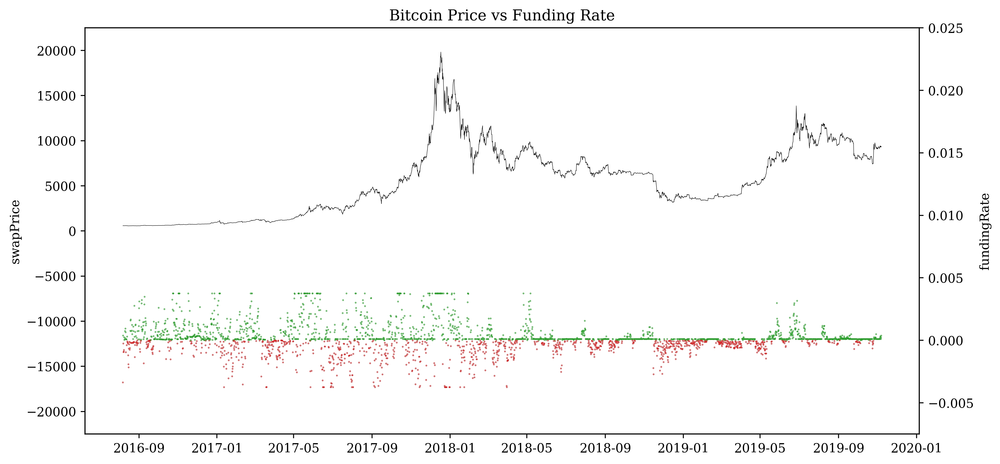

In this research, we dive into the bitcoin perpetual swap contract on the BitMEX exchange. Specifically, we are interested at the predicting power of its funding structure and the subsequent applications to algorithmic trading.
Traditionally, future provides additional liquidity and leverage to market participants. With USD, one may either buy Bitcoin, or Bitcoin futures which provide x more gain potentials. However, every future contract has an expiry date and can be traded at significantly spread. The first Bitcoin future in the U.S. was traded on Dec 10, 2017 on the Cboe Futures Exchange.
The Bitcoin perpetual swap contract, on the contrast, does not have an expiry date thus removing the need to rollover. It trades much closer to the underlying Bitcoin price via a funding mechanism. On BitMEX, the swap holders must exchange fundings every hours between the long and short counter-parties. This create price pressure for the swap price to converge to the actual Bitcoin price.
For example, if swap price Bitcoin price, then the funding would be positive and therefore the long positions will need to pay funding to its short counter-parties. This creates pressures for the swap price to decrease and move towards the Bitcoin price.
Strategy
The funding creates a great monetary incentive if you are holding the contract on the right side and we would like to see if we can capture the funding gain overtime with an algorithmic trading strategy. Since the funding is announced hours before the actual exchange happens, we have an hour window of entry after knowing that a profitable funding will occur. After we enter the contract and collect the funding, we then have another hour window for exiting (this assumes we only want to enter contract at any given time). We will try to look for optimal enter/exit time combinations and evaluate performances.
This is similar to the mean reversion strategy discussed by BitMEX’s founder Arthur Hayes in his blog[1][2]. We are carrying this strategy further, analyzing enter and exit options at more granular level and proposing a more optimal execution strategy.
Dependency
1 2 3 4 5 6 7 8 9 10 11 12 13
import pytz import time import datetime import requests import numpy as np import pandas as pd from random import random import statsmodels.api as sm import matplotlib.pyplot as plt from IPython.display import display, HTML, Image from sklearn.linear_model import LinearRegression from pandas.plotting import register_matplotlib_converters register_matplotlib_converters()
# swap return by holding from funding time -30m to +1m df['swapRet'] = df.swapPrice.shift(-300) / df.swapPrice.shift(30) - 1 df.dropna(inplace=True) disp(df)
plt.title("Swap Price vs Funding Rate") plt.show()

Analysis
Regress the funding rates to the swap return at different enter/exit time. Here we are trying to look for statistically significant (ideally, negative) correlation between the two. Since a negative correlation would imply additional gain from price change on top of the funding profit. We only consider entering a contract if the funding is outside twice of its 60-day historical rolling standard deviations.
1 2 3 4 5 6 7 8 9 10 11 12 13 14 15 16 17 18 19
deffilter_on_rolling_std(df, window, sigma_band, t1, t2, run_reg=False, show_summary=False, show_coef=True): df_sigma = df.copy() df_sigma['sigma'] = df_sigma.fundingRate.rolling(window).std() df_sigma = df_sigma.fillna(method = 'ffill').dropna() df_sigma = df_sigma.loc[(df_sigma.fundingRate > sigma_band * df_sigma.sigma) | (df_sigma.fundingRate < -sigma_band * df_sigma.sigma)] if run_reg: y = np.array(df_sigma['swapRet']) X = np.array(df_sigma[['fundingRate']]) X = sm.add_constant(X) model = sm.OLS(y,X).fit()
coef = model.params[1].round(4) pval = model.pvalues[0].round(4) if show_summary: print(model.summary()) if show_coef: print('enter', t1, 'exit', t2, 'coef', coef, 'pval', pval)
Here we observe that as exit time becomes longer, the coefficient becomes more negative and p-value of the coefficient indicates higher significance. Thus we would want to hold the swap position more than 360 minutes/6 hours. Next we look at the impact from entry time.
Similar trends are observed in the entry times and that earlier the entry, the more profit it seems to imply from price changes. We show a summary of the regression at enter time minutes and exit time minutes. There is a moderate R-square of 0.039 and high significance in coefficient which suggest a mean reversion in price given that specific time window.
Warnings: [1] Standard Errors assume that the covariance matrix of the errors is correctly specified.
Strategy
Based on the research above, this strategy will enter into a swap agreement to collect funding at and exit at . At , if the next funding does not fall outside of the 2-sigma band AND if we are in a position to collect the next funding, we will test two choices of
holding for more and exit after colllecting the funding
exiting
We will test the impact of a 10bps fee + slippage on each trade.
We can see that this strategy does provide substantial P&L from the historical periods tested with relatively limited capital exposure. Fees would impact the gains slightly, and using an optimize approach would further improve the performance.